ALL Time Top 10 Muscle Cars
For some people, no number of slick sports cars from Ferrari, Porsche, Jaguar, Maserati or Lamborghini can replace the good old-fashioned muscle car. Muscle cars usually involve outfitting a family-style, full or medium size car with a powerful engine. Intended mainly for street use and drag races, these cars can more than hold its own in terms of speed and power even though they cost a fraction of the price of the high-end sports cars.
That is why even up to now, the muscle cars that came out decades ago are still much desired by real car connoisseurs. There is nothing like the sound of an engine revving up the bulky automobile. Here now is the top 10 most sought after classic muscle cars.
10. Plymouth Roadrunner
Marketed as a muscle car for the young, the Plymouth Roadrunner was first introduced in 1968 and was in production until 1970. The base price at that time was only $3,000. It was advertised with the cartoon character of the same name, complete with the beep horn as Wile E. Coyote was chasing it down. Famed for its simple and no-frills design, the engine however is usually modified by enthusiasts to boost its horsepower from 383 to 390. Others even make use of the 426 Hemi. It can go at more than 140 miles per hour and can complete a quarter mile in just 13.5 seconds.
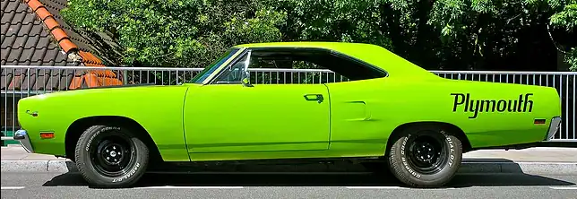
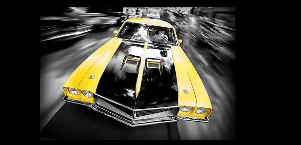
9. Buick GSX
The Buick Skylark was a popular medium-sized model back in the 1960′s. In 1970, the company that manufactured the Skylark decided to put a 7.5-liter engine with 400 horsepower into the vehicle. The result was outstanding. Its base horsepower was at 360, but could easily top 400 with a few tweaks in the camshaft, heads and valves. Its quarter mile speed was 13.38 seconds.
8. Oldsmobile GSX
The Oldsmobile 442 got its name for its four-barrel car, four-speed gearbox and dual-exhaust system. The 1971 L69 version had three double-barrel carbs and could hit 360 horsepower with a quarter mile speed of 14.8 seconds. It can fetch $85,000 in today’s market. A rarer W30 version was also made, with only 54 units built, though dealers installed an additional 97 units. It had a six-pack motor, air induction system and capability of generating 365 horsepower.
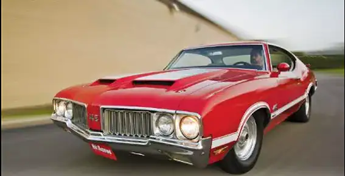
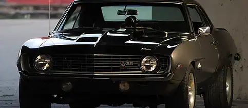
7. Chevrolet Camaro
The Oldsmobile 442 got its name for its four-barrel car, four-speed gearbox and dual-exhaust system. The 1971 L69 version had three double-barrel carbs and could hit 360 horsepower with a quarter mile speed of 14.8 seconds. It can fetch $85,000 in today’s market. A rarer W30 version was also made, with only 54 units built, though dealers installed an additional 97 units. It had a six-pack motor, air induction system and capability of generating 365 horsepower.
6. Plymouth Superbird 440
In stark contrast to the Plymouth Road Runner, the Plymouth Superbird 440 featured a trendsetting, albeit odd-looking, body. It was actually based on the Road Runner, but it was redesigned to meet certain requirements of NASCAR. The Superbird 440 was built in 1971 and had a Magnum 440 V8 cubic engine that could go up to 375 horsepower. Upgrades were available through either the six-pack with a trio of two-barrel carbs or the Hemi V8 engine with 425 horsepower. Its price has been increasing dramatically the past few years, from $67,000 in 2001 to $107,000 in recent auctions.
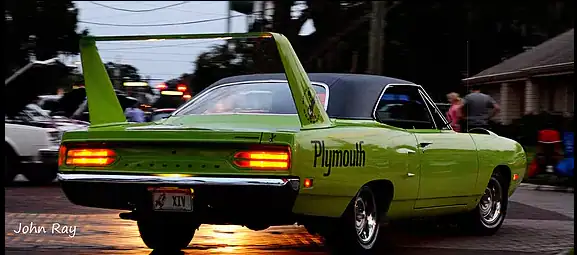
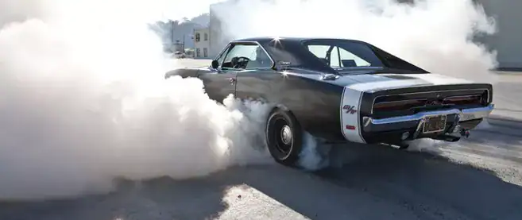
5. Dodge Charger R/T 440
In stark contrast to the Plymouth Road Runner, the Plymouth Superbird 440 featured a trendsetting, albeit odd-looking, body. It was actually based on the Road Runner, but it was redesigned to meet certain requirements of NASCAR. The Superbird 440 was built in 1971 and had a Magnum 440 V8 cubic engine that could go up to 375 horsepower. Upgrades were available through either the six-pack with a trio of two-barrel carbs or the Hemi V8 engine with 425 horsepower. Its price has been increasing dramatically the past few years, from $67,000 in 2001 to $107,000 in recent auctions.
4. Pontiac GTO
The Pontiac GTO was one of the first muscle cars and has thus achieved iconic status. Built from 1964 to 1969, it burst into the limelight through the 1965 Goat model that had a 6.3-liter V8 engine. It changed from a six-pack to a single four-barrel carb in 1967 that could go up to 360 horsepower. In 1969, it released the Judge model that had a 6.5-liter engine. It can fetch as much as $200,000 today.
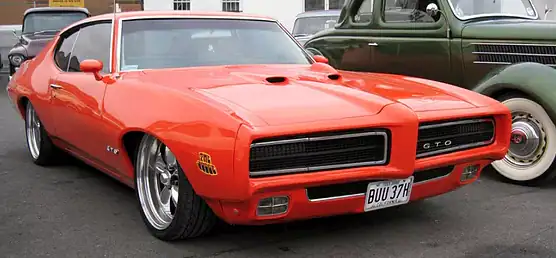
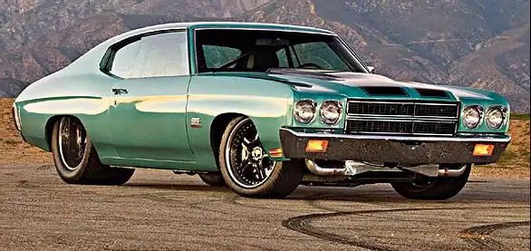
3. Chevrolet Chevelle
The Pontiac GTO was one of the first muscle cars and has thus achieved iconic status. Built from 1964 to 1969, it burst into the limelight through the 1965 Goat model that had a 6.3-liter V8 engine. It changed from a six-pack to a single four-barrel carb in 1967 that could go up to 360 horsepower. In 1969, it released the Judge model that had a 6.5-liter engine. It can fetch as much as $200,000 today.
2. Plymouth Barracuda
The Pontiac GTO was one of the first muscle cars and has thus achieved iconic status. Built from 1964 to 1969, it burst into the limelight through the 1965 Goat model that had a 6.3-liter V8 engine. It changed from a six-pack to a single four-barrel carb in 1967 that could go up to 360 horsepower. In 1969, it released the Judge model that had a 6.5-liter engine. It can fetch as much as $200,000 today.
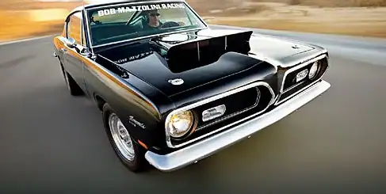
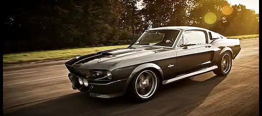
1. Shelby GT500KR
The Pontiac GTO was one of the first muscle cars and has thus achieved iconic status. Built from 1964 to 1969, it burst into the limelight through the 1965 Goat model that had a 6.3-liter V8 engine. It changed from a six-pack to a single four-barrel carb in 1967 that could go up to 360 horsepower. In 1969, it released the Judge model that had a 6.5-liter engine. It can fetch as much as $200,000 today.
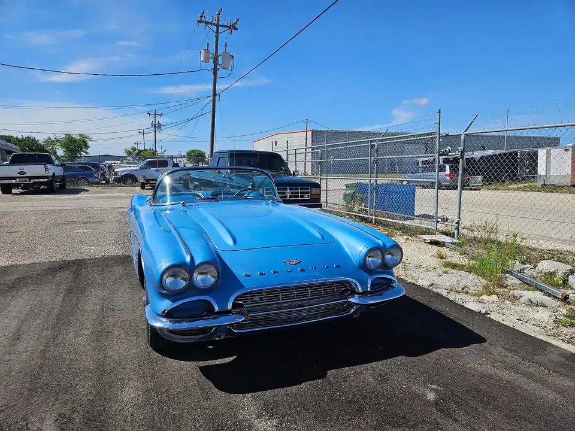